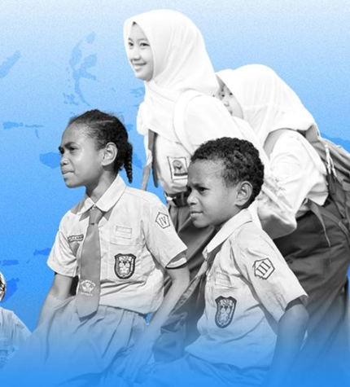
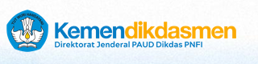
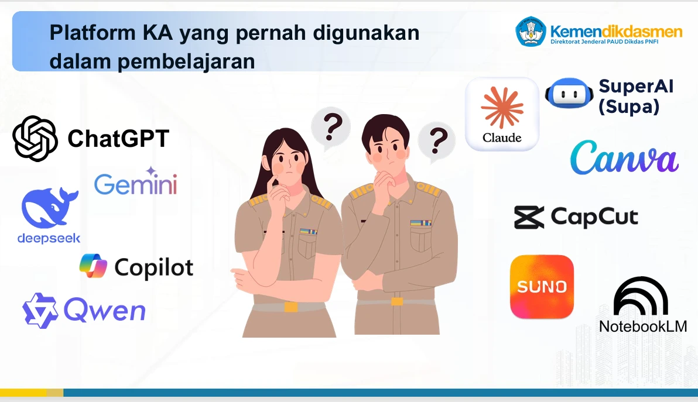
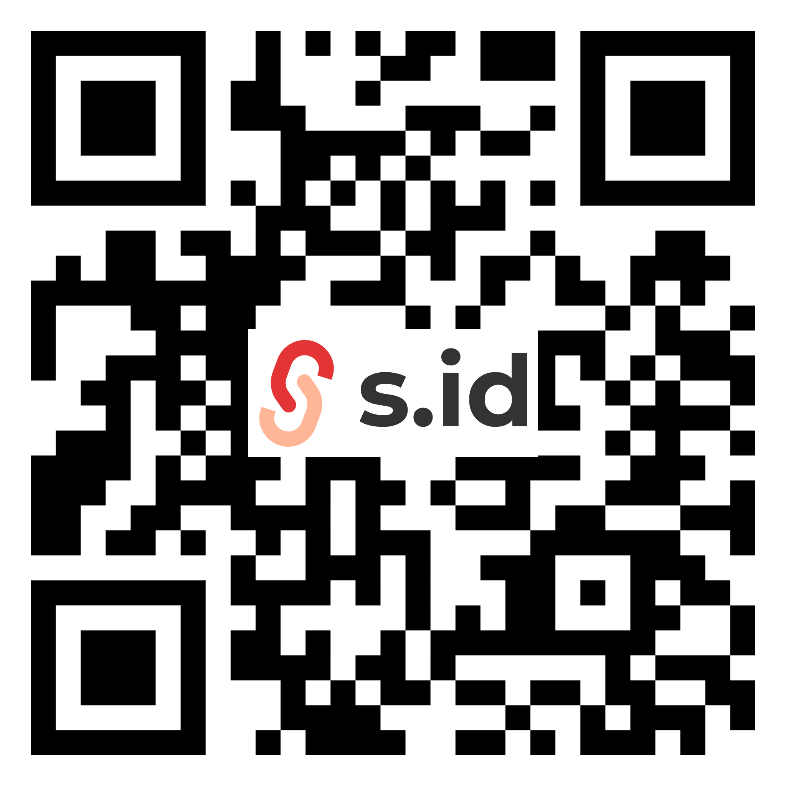

BIMTEK PENGUATAN DIGITALISASI PEMBELAJARAN
Digitalisasi Pembelajaran untuk Penguatan Literasi dan Numerasi


BIMTEK DIGITALISASISELAMAT DATANG
BIMTEK PENGUATAN DIGITALISASI PEMBELAJARAN

AGENDA
| Waktu | Kegiatan | Hasil Kegiatan |
|---|---|---|
| 12.30–13.00 | Registrasi Peserta | — |
| 13.00–13.20 | Pembukaan | — |
| 13.20–14.20 | Paradigma Pembelajaran Digital | Pemahaman latar belakang digitalisasi pembelajaran untuk mendukung literasi dan numerasi |
| 14.20–14.50 | Perancangan Media Pembelajaran Interaktif (MPI) | Peserta mampu merancang dan mencoba MPI sederhana dengan bantuan KA. |
| 14.50–15.00 | Penyusunan RTL (Rencana Tindak Lanjut) | — |
CHECK-IN
Pilih satu emoji. Arti emoji akan muncul setelah diklik.
Apa yang kamu pilih? Klik salah satu emoji.
Pilihan hanya ditampilkan pada perangkat ini.
MATERI 1 · PARADIGMA DIGITAL
VISI
Visi Indonesia Emas 2045 adalah cita-cita besar bangsa Indonesia untuk menjadi negara maju dan sejahtera pada tahun 2045, saat Indonesia merayakan 100 tahun kemerdekaan. Visi ini mencakup beberapa aspek utama, termasuk pembangunan manusia dan penguasaan ilmu pengetahuan dan teknologi, pembangunan ekonomi berkelanjutan, pemerataan pembangunan, serta pemantapan ketahanan nasional dan tata kelola pemerintahan.
MATERI 1 · PARADIGMA DIGITAL
Kelahiran >2013
Kelahiran 1997–2012
Kelahiran 1981–1996
Kelahiran 1965–1980
Kelahiran 1946–1964
Kelahiran <1945
Setiap generasi memiliki peran penting dalam membangun ekosistem digital yang inklusif dan berkelanjutan.
MATERI 1 · PARADIGMA DIGITAL
Bukan sekadar memindahkan papan tulis ke layar proyektor, ini adalah pergeseran epistemologis mendasar dalam cara pengetahuan dikonstruksi, didistribusikan, dan dinilai melalui ekosistem teknologi digital.
MATERI 1 · PARADIGMA DIGITAL
PARADIGMA TRADISIONAL
PARADIGMA DIGITAL
PARADIGMA TRADISIONAL
PARADIGMA DIGITAL
PARADIGMA TRADISIONAL
PARADIGMA DIGITAL
PARADIGMA TRADISIONAL
PARADIGMA DIGITAL
PARADIGMA TRADISIONAL
PARADIGMA DIGITAL
MATERI 2 · MENGENAL MPI
MATERI 2 · MENGENAL MPI
KARAKTERISTIK UTAMA MPI · COBA LANGSUNG
Pilih jawaban untuk memulai. Suara berbunyi setelah Anda berinteraksi.
Contoh penerapan interaktivitas, umpan balik, animasi, dan suara. Atur volume perangkat agar suara terdengar.
MATERI 2 · MENGENAL MPI

MATERI 2 · MENGENAL MPI
Prompt engineering adalah teknik atau seni merancang dan menyusun instruksi (prompt) yang diberikan ke Kecerdasan Artifisial (KA), seperti chatbot atau model bahasa, agar KA memberikan jawaban atau output yang akurat, relevan, dan sesuai dengan kebutuhan pengguna.
MATERI 2 · MENGENAL MPI
Dengan kata lain, prompt engineering adalah cara kita “berbicara” atau memberikan perintah ke KA supaya hasilnya tidak terlalu umum, tidak ambigu, dan tepat sasaran.
Semakin lengkap dan detail prompt, maka hasilnya lebih akurat.
Contoh prompt yang kurang akurat:
Buka video contoh di YouTube Video memerlukan koneksi internet.MATERI 2 · MENGENAL MPI
Tentukan peran yang diinginkan agar sesuai dengan “keahlian” yang Anda butuhkan.
Contoh: Anda adalah guru SMP kelas 7 yang berpengalaman mengajar IPA.
Jelaskan detail bantuan yang Anda butuhkan.
Contoh: Buat 2 kegiatan diskusi aktif tentang pencemaran lingkungan bagi siswa perkotaan.
Tentukan tampilan respons yang Anda harapkan.
Contoh: Buat dalam bentuk poin-poin yang dapat disampaikan guru sesaat sebelum diskusi.
Tentukan batasan/lingkungan dari hasil penggunaan prompt Anda.
Contoh: Peserta diskusi berjumlah 32 dan sebagian besar belum memahami konsep pencemaran di kota besar. Proses diskusi akan menggunakan Papan Interaktif Digital dan siswa harus berinteraksi seluruhnya dengan Papan Interaktif Digital.
TAUTAN KEGIATAN
PRAKTIK MEMBUAT MPI
Buatlah media pembelajaran interaktif menggunakan prompt yang telah disediakan.
Upload link prompt pada tabel yang disediakan.
Buka https://s.id/tNAHiPindai barcode atau buka tautan S.id sesuai PPT. Akses tautan memerlukan koneksi internet.
